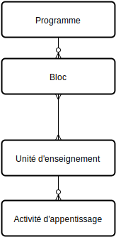

Les programmes d'études sont créé à partir du menu Enseignement.
Chaque programme est constitué de blocs qui partagent un ensemble d'unités d'enseignement qui eux même sont constitués d'activités d'apprentissage. Les programmes sont créés pour une année donnée, il est possible de copier des programmes d'une année à l'autre. Le mécanisme de publication permet de sélectionné les programmes qui sont actifs et qui sont publiés sur le site public.
Avertissement
Il est important de comprendre la notion de propriété entre ces différentes entités. Les blocs appartiennent aux programmes, ils n'existent pas en dehors d'un programme et si on supprime le programme, ils disparaissent avec lui. De même les activités d'apprentissage appartiennent aux unités d'enseignement.
A contrario, les unités d'enseignement n'appartiennent pas aux blocs, les différents blocs les partagent. De cette manière, elles peuvent être réutilisées d'année en année ainsi qu'entre différents programmes d'une même année. Par exemple, l'unité d'enseignement Histoire 1 peut être utilisée dans tous les programmes de Bac 1, un changement à la définition de l'unité (ou des activités d'apprentissage qui la compose) sera effectif dans tous les programmes qui en font usage, quelque soit l'année ou la spécialité.
Création des unités d'enseignement
La première étape pour créer les programmes est de créer les unités d'enseignement, ce sont les éléments de base pour constituer les programmes.
Le menu Unités d'enseignement/Unités d'enseignement présente l'ensemble des unités disponibles et permet d'en créer de nouvelles.
Le menu Arborescence des activités d'apprentissage présente les activités sous-forme d'arbre afin de contrôler la structure des différentes activités au sein des différentes spécialités et des unités d'enseignement.
Le menu Liste des activités d'apprentissage présente les activités sous-forme d'une liste permettant d'y accéder par des critères de recherche variés.
Note
La séquence reprise dans les unités et les activités est un paramètre qui permet de fixer l'ordre d'affichage, ils seront affichés par ordre croissant de séquence.
Création des programmes
Une fois les unités d'enseignement disponibles, il est possible de créer des programmes qui en font usage. Chaque programme est défini pour une année donnée et contient un ensemble de blocs qui représentent une année d'étude standard qui est proposée aux étudiants et publiée sur le site.
Le bloc sert également de base pour la définition des programmes annuels des étudiants.
Les blocs appartiennent à leur programme, il n'est pas possible de les réutiliser entre différents programmes.
Note
Il est possible de copier un programme d'une année à l'autre via le menu Action/Dupliquer puis de changer l'année afin de préparer les nouveaux programmes.